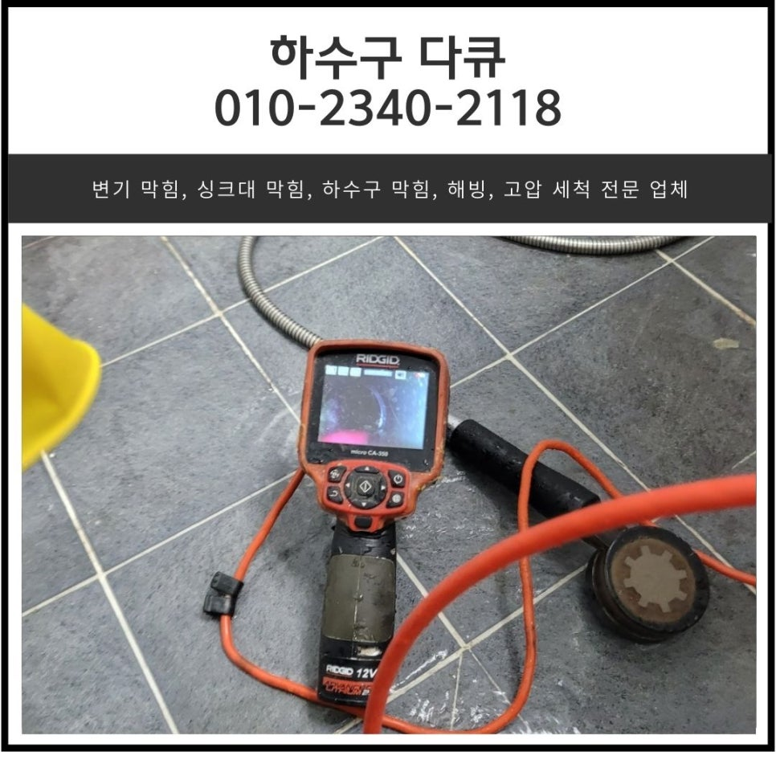
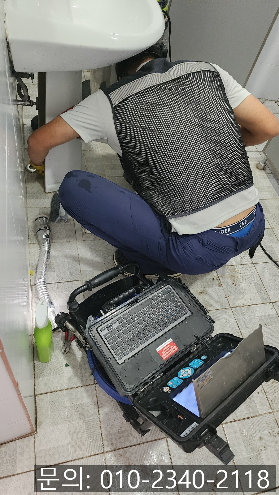
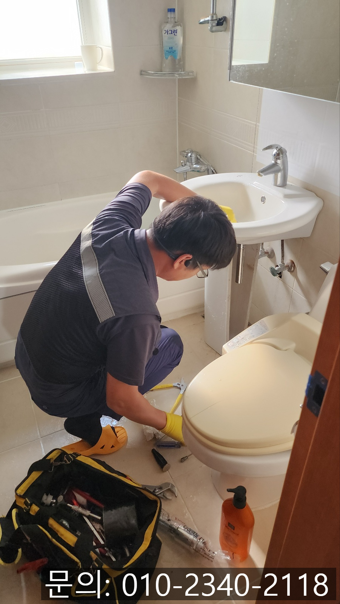
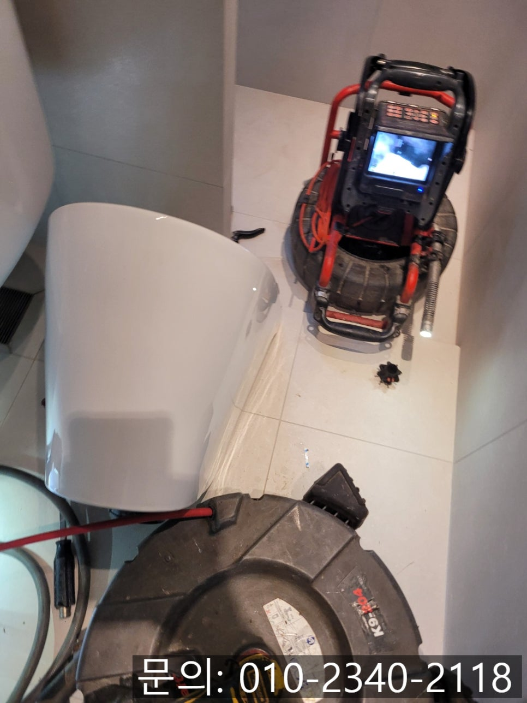
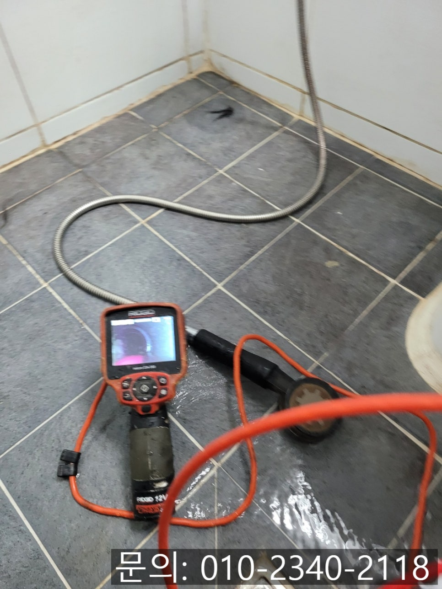
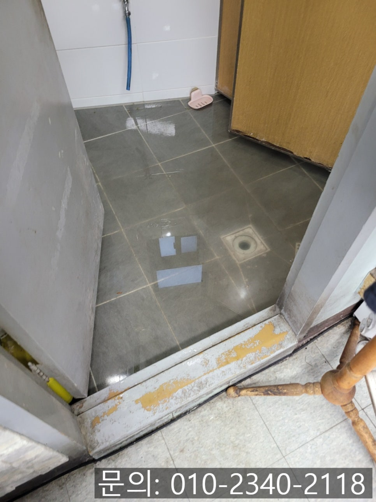
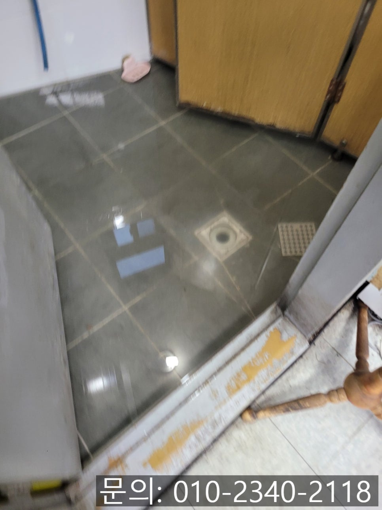

🏠 정남면 화장실 막힘 화성 양감면 하수구 역류 뚫어주는 설비 업체
화성 양감 변기막힘 전문 시공 후기

📋 작업 개요
- 위치: 화성 양감, 양감, 화성
- 서비스 유형: 변기막힘, 하수구막힘, 배관막힘, 역류해결, 뚫는업체, 배관청소
- 작업 일시: 2025. 1. 8. 9:10
- 업체명: 하수구수사대 (010-5615-2118)
🔍 문제 상황
안녕하세요.
정남면 화장실 막힘, 화성 양감면 하수구 역류 뚫어주는 설비 업체 하수구 다큐입니다.
우리가 다양한 이유로 자주 사용할 수밖에 없는 화장실에는 여러 배관이 숨겨져 있습니다.
그만큼 다양한 하수구 막힘이 발생할 수 있겠죠?
오늘은 화장실에서 발생할 수 있는 다양한 하수구 막힘에 대해 설명해 드리고 간단하게 예방할 수 있는 방법을 설명해 드릴게요.
정남면 화장실 막힘이라고 하면 크게 네 가지로 구분할 수 있는데요.
첫 번째로 손을 씻고, 양치하고, 세수하는 등 다양하게 이용하는 세면대에서 막힘이 발생할 수 있습니다.
세면대의 경우 워낙 자주 사용하다 보니 그로 인해 먼지나 머리카락 등이 같이 흘러들어가 막히는 경우가 많아요.

🔎 원인 분석
💡 전문가 진단: 정밀 진단 장비를 사용하여 슬러지의 고착 여부를 판명하고 타격/세척 작업을 실시했습니다.
주기적으로 세면대 아래쪽에 이물질이 쌓이는 부분을 분리해서 청소해 주시거나 다이소에서 쉽게 구할 수 있는 배수구 클리너, 또는 세면대로 흘러들어간 이물질을 빼주는 도구를 이용해 주기적으로 청소해 주시는 게 좋습니다.
두 번째로 목욕을 하는 욕조 막힘이 발생할 수 있어요.
욕조의 경우 목욕을 하면서 머리카락이나 먼지 등이 흘러들어가 막히는 경우가 가끔 발생합니다.
이물질이 흘러들어가지 않도록 욕조 거름망을 씌워주면 예방할 수 있어요.
세 번째로 변기 막힘은 용변으로 인해 막히는 경우도 있지만 실수로 물건을 빠트려 막히는 경우가 의외로 많습니다.
변기 위쪽에 화장품이나 각종 물건을 늘어놓고 사용하신다면 깨끗하게 치우시는 것도 좋은 방법이에요.
마지막으로 네 번째는 화장실 바닥 막힘이에요.
머리카락이나 먼지들이 들어가 쌓이기도 하고 석회가 배관에 쌓여 막히는 경우가 발생하는데요.

🔧 작업 과정
화장실 바닥 역시 거름망을 사용해 주시는 게 좋아요.
화장실 하나의 배관이 막히게 되면 다른 배관도 함께 막힐 수 있으니 평소에 신경 써서 관리해 주셔야 합니다.
화성 양감면 하수구 역류 뚫어주는 설비 업체 하수구 다큐가 다녀온 현장을 소개해 드릴게요.
정남면 화장실 막힘으로 연락을 받고 현장에 도착해 보니 바닥에서 역류한 물이 그대로 고여있는 상태였습니다.
상가에서 공동으로 사용하는 화장실이다 보니 흙이며 먼지 등이 많이 들어가 역류가 발생한 것 같아요.
정확한 원인은 내시경 카메라로 직접 확인해야 하기 때문에 먼저 석션을 사용해 고여있는 물을 빨아드려 제거하는 작업을 진행했어요.
석션으로 물을 거의 다 제거한 뒤 내시경 카메라를 진입시켜 배관 내부의 상태를 확인해 보니 기름 슬러지와 각종 흙먼지로 배관이 막혀있는 상태였습니다.
고객님께 내시경으로 촬영한 배관 내부의 모습을 확인 시켜드린 다음 배관 스케일링을 진행하기로 했어요.
화성 양감면 하수구 역류 뚫어주는 설비 업체 하수구 다큐는 플렉스 샤프트 장비를 배관 내부로 진입시켜 오랜 시간 쌓여 딱딱하게 굳어버린 기름 슬러지를 제거하기로 했습니다.
플렉스 샤프트 장비는 노즐 끝에 달려있는 체인이 배관 내부에서 회전하면서 기름 슬러지를 타격해 잘게 부서 주는 역할을 합니다.
워낙 오랜 시간 돌처럼 딱딱하게 굳어있던 기름 슬러지이다 보니 여러 차례 반복해서 작업을 진행했어요.
여러 차례 반복해서 작업을 진행하자 어느새 이물질이 모두 제거되고 깔끔해진 배관을 확인할 수 있었습니다.
마지막으로 통수 테스트도 진행해드린 다음 작업을 마무리할 수 있었어요.


✅ 작업 완료
화장실은 다양한 곳에서 막힘이 발생할 수 있습니다.
어렵지 않은 방법으로 예방할 수 있으니 항상 신경 써서 관리해 주시고요.
혹시라도 정남면 화장실 막힘이 발생하게 되면 하수구 역류 뚫어주는 설비 업체 하수구 다큐로 연락 주세요.
경기도 화성시 향남읍 상신하길로328번길 26 5층 505호 5호




⚠️ 하수구 배관 막힘 예방 및 관리 가이드
- ✅ 머리카락, 비닐, 물티슈 등 물에 분해되지 않는 이물질은 하수구 유입을 절대 금지해 주세요.
- ✅ 하수구 거름망을 씌우고 모여진 이물질은 주기적으로 쓰레기통에 바로 비워주셔야 합니다.
- ✅ 배관 노후가 심할 경우 이물질이 더 쉽게 걸리므로 주기적인 배관 세척(고압세척 등)을 권장합니다.
- ✅ 작업 후 1년 이내 재발 시 하수구수사대에서 무상 A/S 보증 서비스를 제공합니다.
💡 핵심 정리
- 확실한 장비 작업(내시경 점검 및 샤프트 스케일링)으로 원인을 뿌리 뽑습니다.
- 작업 후 1년 이내에 동일한 부위 재발 시 100% 무상 A/S 서비스를 보장합니다.
- 서울 · 경기 · 인천 전 지역에 24시간 언제든 긴급 출동할 수 있도록 항시 대기 중입니다.
❓ 자주 묻는 질문 (FAQ)
🚨 화성 양감 변기막힘 문제로 고민이신가요?
정확한 원인 진단과 확실한 시공으로 재발 없는 해결을 약속드립니다.
24시간 긴급 출동 | 서울 · 경기 · 인천 전지역 | 1년 내 재발 시 무상 A/S